単一選択
SELECT · あらかじめ決めた選択肢から1つを選ぶ入力欄
単一選択フィールドとは
- 1.1フィールドの追加と属性パネルの構成
1.1フィールドの追加と属性パネルの構成
概要
単一選択(SELECT)は、あらかじめ決めた選択肢から1つを選ぶ入力欄です。喫煙の有無 · 重症度グレード · はい/いいえのように、決められたカテゴリで回答する項目に使用します。最初はドロップダウンで表示され、ラジオボタンに変更することもできます。3.3 複数選択できる必要がある場合は複数選択タイプを、数値でグレードを付ける項目には尺度タイプを使用します。
画面説明
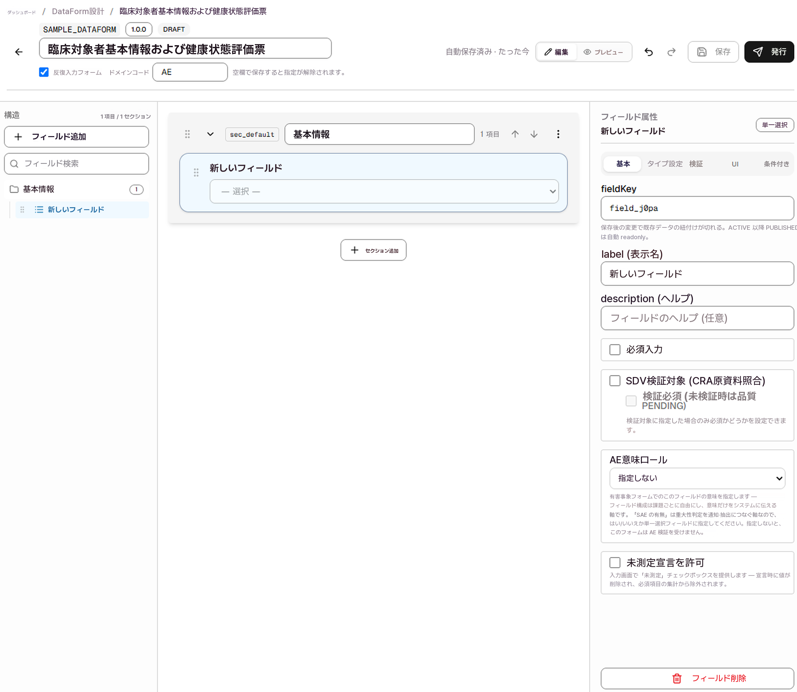
[+ フィールド追加] — ここでタイプを指定するとフィールドが作成されます。
構造ツリーに新しいフィールドが追加されます。
WYSIWYG キャンバスにドロップダウンが表示され、— 選択 — の案内が表示されます。選択肢はまだ空です。3.2
fieldKey — 値が保存される実際のキーです。2.1
label (表示名) · description (ヘルプ) — 画面に表示される名前と補足説明です。2.1
必須入力 · SDV検証対象 — 2.2 · 2.3 で扱います。
AE意味ロール — 画面の案内が「『SAE の有無』は重大性判定を通知 · 抽出につなぐ軸なので、はい/いいえか単一選択フィールドに指定してください」と示すとおり、このタイプが指定対象です。有害事象フォームを使用するプロジェクトでのみ使用します。
未測定宣言を許可 — 2.4 で扱います。
タイプバッジ「単一選択」 — 選択したフィールドのタイプです。追加した後は変更できません。
属性タブ 5種 — 基本 · タイプ設定 · 検証 · UI · 条件付き。このマニュアルの2~6章が各タブに対応します。
注意事項
必須確認 データ破損 · フォーム完了不可
- • タイプは追加した後に変更できません。誤って選択した場合は、フィールドを削除して再度追加してください。(テーブル型 · フィールドグループの下位項目のみ例外としてタイプを変更できます。)
- • 保存される値は選択肢の
valueです。画面に表示される文言(label)ではなく、選択肢に指定した保存値がデータに入ります — この区別が、このタイプを扱う際に最も混同しやすい点です。3.2 - • 発行(PUBLISH)後は構造を変更できません。運用中に修正が必要な場合は、新しいバージョンを発行してください。
基本タブ — 名前 · 必須 · 検証対象 · 未測定
- 2.1fieldKey · 表示名 · ヘルプ
- 2.2必須入力
- 2.3SDV検証対象 (CRA原資料照合)
- 2.4未測定宣言を許可
2.1fieldKey · 表示名 · ヘルプ
概要
フィールドの名前を決める領域です。保存キー(fieldKey)と画面に表示される名前(label)は別々の値であり、変更してよいタイミングが異なります。
画面説明
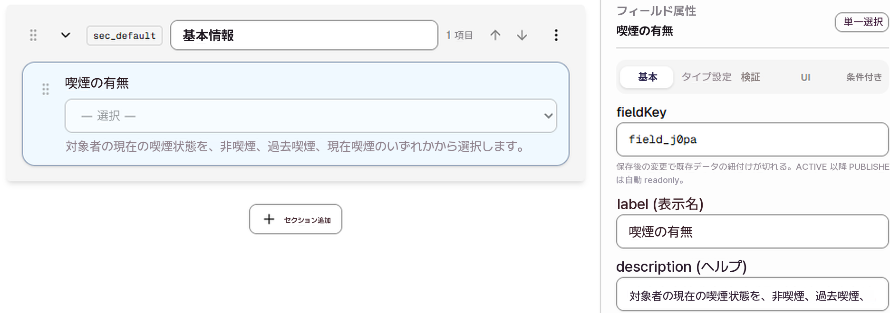
label (表示名) — 入力画面に表示する項目名を入力します。
キャンバスのフィールドタイトルとして表示されます。
description (ヘルプ) — 表示名の下に表示する補足説明を入力します。空欄にすると表示されません。
ドロップダウンの下にグレーの文字で表示されます。
fieldKey — 値が保存される実際のキーです。フィールドを追加すると field_j0pa のように自動で付与され、英字 · 数字 · アンダースコアで変更できます。画面には表示されません — 下記の注意事項を必ず確認してください。
注意事項
必須確認 データ破損 · フォーム完了不可
- • ⛔ 保存した後は fieldKey を変更しないでください。画面の案内のとおり「保存後の変更で既存データの紐付けが切れる」 — すでに入力された値が新しいキーと結び付かず、事実上失われます。
- • フォームが ACTIVE 以降 PUBLISHED 状態になると、fieldKey 入力欄は自動で読み取り専用になります。システムが変更を防ぐのはそれ以降なので、それまではユーザー自身が注意する必要があります。
誤解しやすい動作
- • 選択肢の意味はヘルプに記載してください。キャプチャのように「非喫煙、過去喫煙、現在喫煙のいずれかから選択します」と書いておくと、どのカテゴリに分かれるかがひと目でわかります。選択肢のラベルだけでは境界があいまいな場合が多くあります。
- • 表示名はいつ変更しても安全です。保存キーではなく画面の文言だからです。
2.2必須入力
概要
この項目を必ず選択する必要があるかどうかを設定します。選択すると、入力画面で選択肢を何も選ばなかった場合に保存がブロックされます。
画面説明
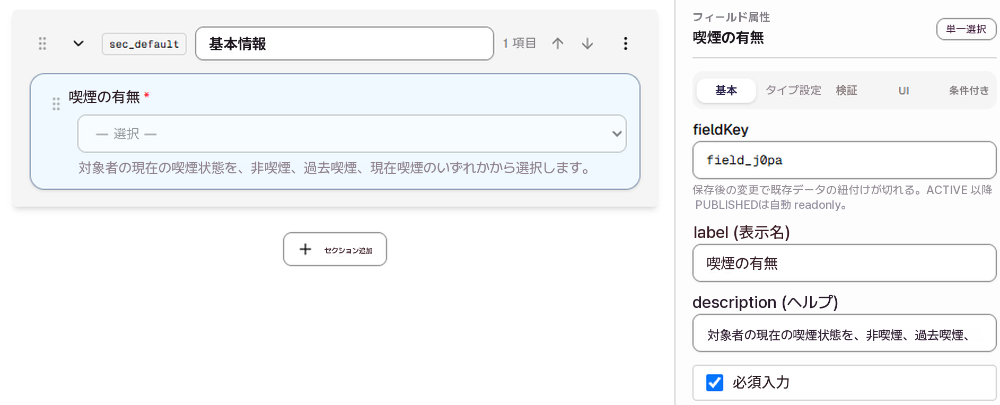
必須入力 — 選択すると、このフィールドが必須になります。
キャンバスの表示名の右に赤いアスタリスク(*)が表示され、ユーザーに必須であることを知らせます。
注意事項
必須確認 データ破損 · フォーム完了不可
- • ⛔ 必須に指定する前に、選択肢がすべてのケースを網羅しているか確認してください。該当する選択肢がないと、記録者は適当に選ぶか、フォームを完了できなくなります。必要に応じて「該当なし」 · 「不明」のような選択肢を選択肢一覧に追加するか3.2、条件付き表示で該当者にだけ質問するか6章、未測定宣言を許可してください2.4。
- • 条件付き表示で非表示になったフィールドは、必須検証が免除されます。6章 一方、UIタブの非表示は除外されないため、混同しないでください。5.3
誤解しやすい動作
- • 「該当なし」を選択肢にするか、未測定宣言にするかで意味が異なります — 選択肢は評価結果として保存され、未測定宣言は評価できなかったものとして記録され、必須集計から外れます。2.4
参考
- • 必須かどうかはフォーム完了の判定に使用されます。選択肢を何も選ばないと、値が空として処理されます。
2.3SDV検証対象 (CRA原資料照合)
概要
SDV(Source Data Verification) は、臨床開発モニター(CRA)が入力値を医療機関の原資料と照合する手順です。このフィールドをその対象に指定するかどうかを、ここで決めます。この設定はすべてのフィールドタイプで共通なので、画面もタイプに関係なく同じです。
画面説明


SDV検証対象 (CRA原資料照合) — 選択すると、このフィールドが CRA の照合リストに含まれます。
選択状態に変わると、下位項目が有効になります。
検証必須 (未検証時は品質 PENDING) — ①を選択した後でなければ指定できません。選択すると、CRA が照合を終えるまで、そのデータの品質ステータスが PENDING のままになります。
①を選択する前は、②が薄く表示されて無効です。画面の案内のとおり「検証対象に指定した場合のみ必須かどうかを設定できます。」
注意事項
必須確認 データ破損 · フォーム完了不可
- • 値が変更されると検証が解除されます。選択肢を変えると品質ステータスが PENDING に戻り、CRA が再度照合する必要があります。
誤解しやすい動作
- • カテゴリの判定は、照合基準をあらかじめ決めておいてください。「現在喫煙」と「過去喫煙」のように判断が入る選択肢は、原資料を見る人によって異なる解釈になることがあります — ヘルプ2.1に判定基準を書いておくと照合が早くなります。
- • SDV は入力した本人が実施することはできません。システムがクロス検証(Cross-User SoD)を強制するため、入力者と検証者は必ず別の人である必要があります。
参考
- • 品質ステータスは PENDING → VERIFIED → CLEAN の順に進みます。検証必須に指定したフィールドが一つでも未検証であれば、そのデータは CLEAN になりません。
2.4未測定宣言を許可
概要
回答を確認できない場合を値として区別して記録する機能です。選択肢を何も選ばないと、「まだ入力していない」と「確認したが不明」を区別できません。この宣言がその2つを区別します。
画面説明

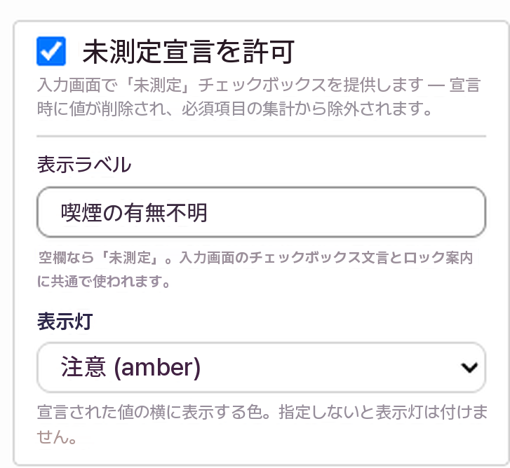
未測定宣言を許可 — 選択すると、入力画面に「未測定」チェックボックスが作成され、下の二つの項目が表示されます。
表示ラベル — 空欄にすると、デフォルト値「未測定」が適用されます。
喫煙の有無不明 に変更すると、この文言が入力画面のチェックボックスとロック案内の両方に適用されます。
表示灯 — デフォルト値はなしです。
注意(amber) に変更すると、宣言された値の横にその色の表示が現れます。
注意事項
必須確認 データ破損 · フォーム完了不可
- • 「不明」を選択肢にするか宣言にするかを先に決めてください。両方を置くと、記録者がどちらを使うべきか迷い、同じ状況が2通りに分かれて保存されます。1つの方式に統一し、ヘルプに明記してください。2.2
- • 宣言すると値が削除されます。画面の案内のとおり — 「宣言時に値が削除され、必須項目の集計から除外されます。」
誤解しやすい動作
- • 宣言されたフィールドは必須集計から除外されます。そのため、必須項目であってもフォームを完了できます。
参考
- • 表示灯を指定しないと、色の表示は適用されません。強調が必要な場合は、注意(amber) などを選択してください。
タイプ設定タブ — 選択肢の作成
- 3.1タイプ設定タブの全体構成
- 3.2選択肢一覧 (value · label · 有効 · 順序 · 削除)
- 3.3表示方式 (displayStyle)
- 3.4選択肢出力方向 (ラジオ専用)
- 3.5デフォルト値 (defaultValue)
3.1全体構成
概要
選択肢を作成するタブです。他のタイプと異なり長さ · 範囲 · 形式はなく、どの選択肢をどのように表示するかだけを設定します。このタイプで実際に使用する項目は4つです。
画面説明
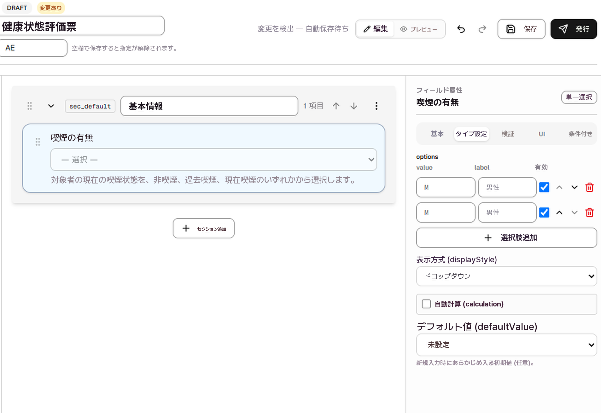
options — 選択肢の一覧です。value · label · 有効の3つの欄と、順序 · 削除ボタンで構成されます。3.2
[+ 選択肢追加] — 選択肢を1行追加します。3.2
表示方式 (displayStyle) — ドロップダウンまたはラジオから選択します。3.3
自動計算 (calculation) — 項目は表示されますが、このタイプでは使用しません。他のフィールドの値から数値を算出する機能なので、数値タイプで使用してください。
デフォルト値 (defaultValue) — 新規入力時にあらかじめ選んでおく選択肢です。3.5
注意事項
必須確認 データ破損 · フォーム完了不可
- • 最初は空の選択肢が2行置かれています。薄い文字の
M·男性は入力例であり、設定された値ではありません。そのまま保存すると、選択肢のないフィールドになります。 - • 選択肢はこの画面で直接列挙します。複数のフォームで同じ選択肢を使う場合もそれぞれ入力する必要があるため、表記と保存値をフォームごとに同一にそろえるよう注意してください。3.2
誤解しやすい動作
- • ラジオを選ぶと項目がもう1つ表示されます。「選択肢出力方向」は表示方式がラジオのときだけ表示されます。3.4
参考
- • このタブの構成は、フィールドを作成するときに選択したタイプで固定されます。タイプが異なると、このタブの項目も異なります。
3.2選択肢一覧 (value · label · 有効 · 順序 · 削除)
概要
選択肢を1行に1つずつ作成します。1行は保存値(value) · 表示文言(label) · 有効かどうかで構成され、右側のボタンで順序を変えたり行を削除したりできます。この画面がこのタイプの中心です。
画面説明
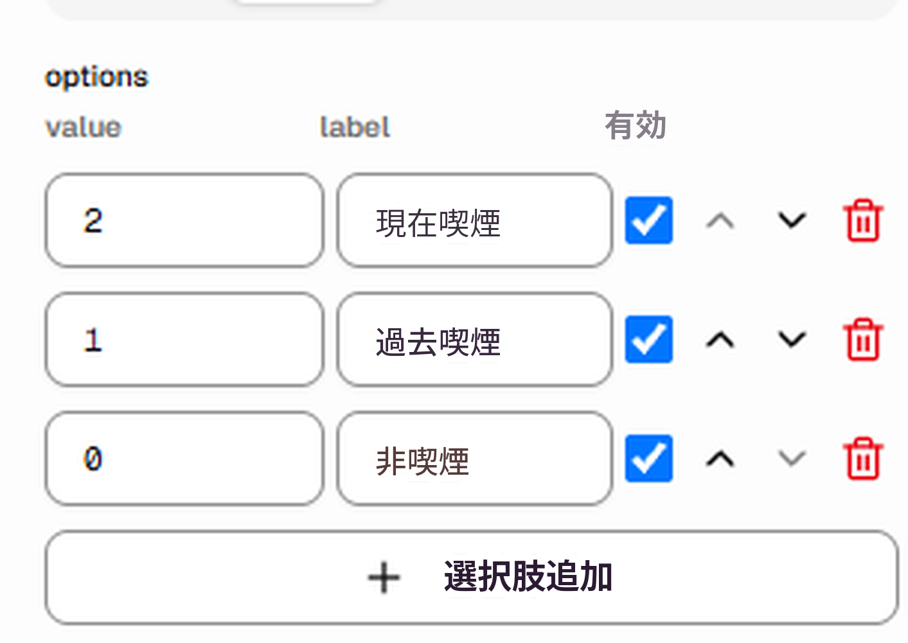
value — データに保存される値です。キャプチャでは 2 · 1 · 0 です。条件付き表示6.2や検証規則4.3でこのフィールドを参照するときもこの値を使用します。
label — 画面に表示される文言です。キャプチャでは 現在喫煙 · 過去喫煙 · 非喫煙 です。データには入りません。
有効 · 順序(↑↓) · 削除(🗑) — 有効を解除すると、その選択肢を削除せずに一覧から外しておけます。矢印で表示順序を変え、ごみ箱で行を削除します。
[+ 選択肢追加] — 選択肢を1行追加します。必要な数だけ繰り返します。
注意事項
必須確認 データ破損 · フォーム完了不可
- • ⛔ 発行した後に value を変更しないでください。すでに
2で保存されたデータがあるのに value をSに変えると、既存の値がどの選択肢なのかわからなくなります。表記だけを直したい場合は label だけを変更してください — label はいつでも安全です。 - • ⛔ value を決めるときは分析まで考慮してください。キャプチャのように
0 · 1 · 2にするとグレードの順序が値に含まれますが、順序のないカテゴリに数字を使うと、存在しない順序を読み取らせることになります。順序がない場合はNEVER·FORMERのように意味がわかる文字列が安全です。 - • すでに保存された値がある選択肢の有効を解除するときは注意してください。新しい入力では選べなくなりますが、既存データはそのまま残ります — 一覧にない値がデータに混ざることになるため、影響を先に確認してください。
誤解しやすい動作
- • 順序は記録者が読む順序です。重症度のように段階がある項目は、弱い方から強い方へ一貫して並べてください — フォームごとに順序が異なると誤選択が増えます。
3つの欄の役割
| 欄 | 入るもの | データに保存されるか | 変更してよいか |
|---|---|---|---|
| value | 保存値 (例: 2) | 保存される | 発行後は変更禁止 |
| label | 画面の文言 (例: 現在喫煙) | 保存されない | いつでも変更可能 |
| 有効 | 選択肢を提供するかどうか | 保存されない | 運用中の変更は慎重に |
3.3表示方式 (displayStyle)
概要
選択肢をどのように表示するかを設定します。ドロップダウン(折りたたまれていて展開する)とラジオ(選択肢がすべて見える)から選択します。保存される値はどちらでも同じです。
画面説明
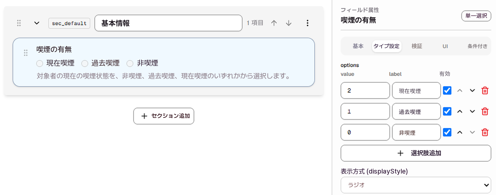
表示方式 (displayStyle) — 選択リストから選びます。デフォルト値はドロップダウンで、キャプチャはラジオに変更した状態です。
キャンバスがラジオボタン3つに変わり、選択肢がすべて表示されます。ドロップダウンのときは — 選択 — の1行だけが表示されていました。
注意事項
誤解しやすい動作
- • 選択肢が少ない場合はラジオが適しています。展開する操作なしにすぐ選べ、どの選択肢があるかがひと目でわかるため、誤選択が減ります。
- • 選択肢が多い場合はドロップダウンが適しています。ラジオにすると画面が長くなり、後ろの項目が押し下げられます。
- • ラジオを選ぶと「選択肢出力方向」項目が表示されます。1行に何個ずつ置くかを設定できます。3.4
参考
- • 表示方式を変えても保存された値は変わりません。画面上の見た目だけが変わるため、運用中に変更してもデータには影響しません。
2つの方式の違い
| 表示方式 | 画面 | 適した場面 |
|---|---|---|
| ドロップダウン (デフォルト) | 折りたたまれていて展開する | 選択肢が多いとき · フォームを短く保ちたいとき |
| ラジオ | 選択肢がすべて見える | 選択肢が少ないとき(2~5個) · すばやく選ばせたいとき |
3.4選択肢出力方向 (ラジオ専用)
概要
ラジオボタンを1行に何個ずつ置くかを設定します。表示方式がラジオのときだけ表示される項目で、ドロップダウンでは表示されません。
画面説明
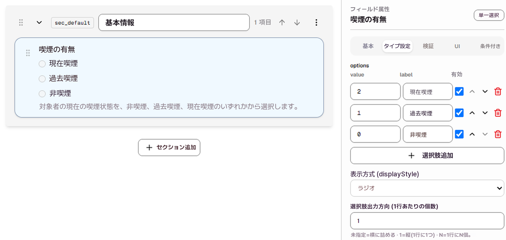
選択肢出力方向 (1行あたりの個数) — 数字を入力します。キャプチャでは 1 です。
ラジオボタンが1行に1つずつ縦に配置されます。3.3 では横に並んでいました。
注意事項
必須確認 データ破損 · フォーム完了不可
- • 表示方式をドロップダウンに戻すと、この設定は画面から消えます。再びラジオに変えたときは、値がそのまま残っているか確認してください。3.3
誤解しやすい動作
- • 文言が長い選択肢は縦(1)にしてください。横に詰めると改行位置が不ぞろいになり、どの文言がどのボタンに対応するのかわかりにくくなります。
- • 重要な判定項目は縦配置が安全です。選択肢が上下に並ぶと、隣のボタンを誤って押すミスが減ります。
- • レイアウト幅5.2と合わせて影響します。フィールドの幅を狭めておくと、指定した個数が1行に収まらないことがあります。
入力値による配置
| 入力 | 配置 | 適した場面 |
|---|---|---|
| 空欄 (未指定) | 横に詰める — 幅が余る分だけ続けて並べる | 選択肢の文言が短いとき |
1 | 縦 — 1行に1つ | 文言が長いとき、または誤選択を減らす必要があるとき |
N | 1行に N 個 | 2列 · 3列にきれいに並べたいとき |
3.5デフォルト値 (defaultValue)
概要
新しい入力を開始するときにあらかじめ選んでおく選択肢です。作成した選択肢の中から選びます。このタイプは設定結果を編集画面で確認できないため、[プレビュー] に切り替える必要があります。
画面説明
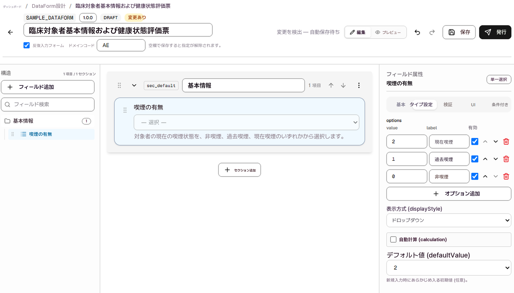
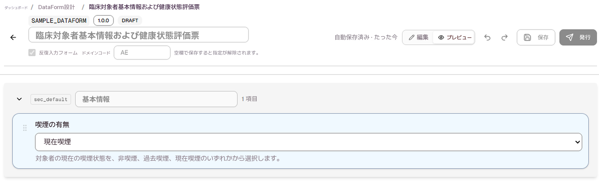
デフォルト値 (defaultValue) — 新規入力時にあらかじめ選択される値を選びます。一覧には保存値(value)が表示されるため、キャプチャでは 2 を選びました。(任意)
編集画面のキャンバスには依然として — 選択 — だけが表示されます。設定が反映されていないのではなく、編集画面がデフォルト値を描画しないためです。
[プレビュー] — 上部でプレビューに切り替えます。
ドロップダウンで「現在喫煙」が選択されています。設定するときはvalue(2)で選び、画面にはlabelで表示されることをここで確認できます。
注意事項
必須確認 データ破損 · フォーム完了不可
- • ⛔ 判断が必要な項目にはデフォルト値を指定しないでください。あらかじめ選ばれていると、記録者が確認せずに見過ごすおそれがあり、実際に評価したかどうかも区別できなくなります。特に安全性 · 有効性の判定項目には設定しないでください。
- • デフォルト値は value で指定し、画面には label で表示されます。2つを混同して誤った選択肢がデフォルトにならないよう、指定した後にプレビューで文言まで確認してください。3.2
誤解しやすい動作
- • 編集画面だけを見て、設定されていないと判断しないでください。このタイプはデフォルト値が編集画面のキャンバスに表示されません — 必ず [プレビュー] で確認してください。
- • デフォルト値は、新しく作成する入力にのみ適用されます。すでに保存されたデータは変更されません。
検証タブ — 保存前の値チェック
- 4.1検証規則がない状態
- 4.2規則の追加
- 4.3規則作成完了 — 他フィールドと比較
4.1検証規則がない状態
概要
保存する前に値が条件に合っているかをチェックする規則をまとめておくタブです。単一選択は作成した選択肢からしか選べないため範囲チェックは不要ですが、その代わり他のフィールドとの関係をチェックするときにこのタブを使用します。4.3
画面説明
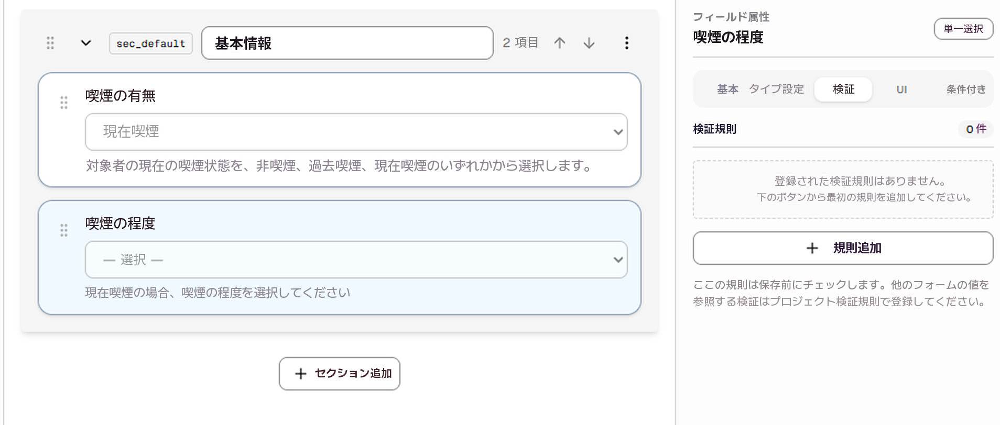
[+ 規則追加] — 最初の規則を作成します。選択した後の画面は 4.2 で説明します。
検証規則領域と、登録された規則数です。最初は 0 件 です。
規則がない場合は、「登録された検証規則はありません。下のボタンから最初の規則を追加してください。」という案内が表示されます。
下部の案内 — 「ここの規則は保存前にチェックします。他のフォームの値を参照する検証はプロジェクト検証規則で登録してください。」
注意事項
必須確認 データ破損 · フォーム完了不可
- • ⛔ 他のフォームの値を参照する検証はここでは作成できません。そのような規則は「プロジェクト検証規則」画面で登録してください。このタブは同じフォーム内で完結するチェックだけを扱います。
誤解しやすい動作
- • キャプチャにはフィールドが2つあります。「喫煙の有無」と「喫煙の程度」 — 後のフィールドが前のフィールドによって意味が変わる関係のため、4.3 で2つのフィールドを結び付ける規則を作成します。
- • 規則を作成しなくてもかまいません。選択肢だけで十分な項目がほとんどです — どうしても必要な関係があるときだけ使用してください。
4.2規則の追加
概要
4.1 の[+ 規則追加]を選択すると規則 1ブロックが作成されます。最初は値の範囲が設定されていますが、単一選択で実際に使うのは他フィールドと比較です — ruleType を変えると画面が変わります。4.3
画面説明
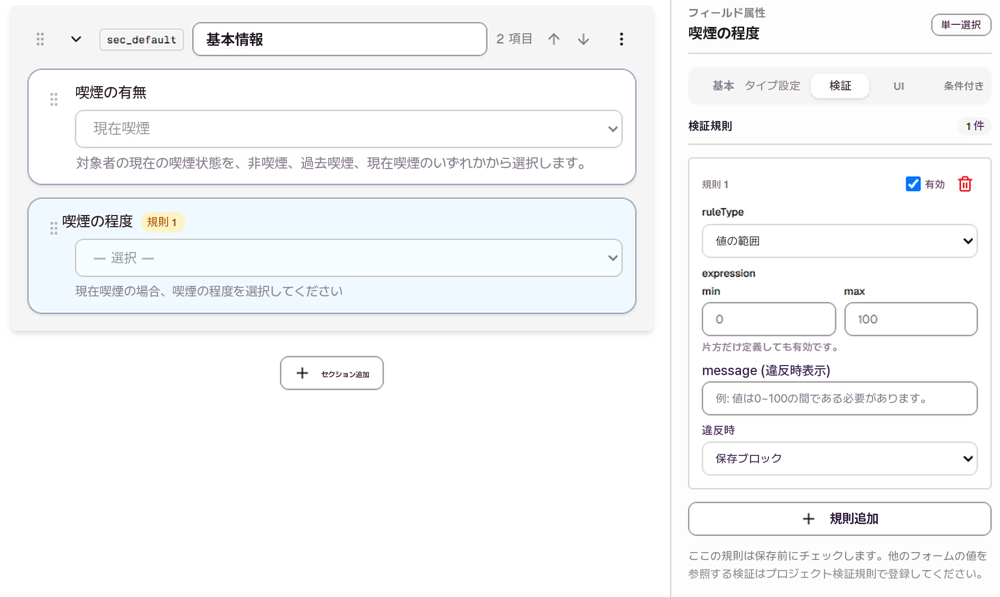
[+ 規則追加] — 規則をもう一つ作成します。(4.1 で選択したのと同じボタンです。)
「規則 1」ブロックが作成され、キャンバスの表示名の横に「規則 1」バッジが表示されます。
規則数が 1 件 に変わります。
有効チェックボックスと削除アイコン — 規則を削除せずに一時的に停止できます。
ruleType — 規則の種類です。最初は値の範囲が選択されています。
min — 値の範囲を選んだときに表示される下限の欄です。
max — 同じ条件で表示される上限の欄です。
薄い文字の 0 · 100 と「例: 値は0~100の間である必要があります。」は入力例であり、設定された値ではありません。
message (違反時表示) — 規則に違反したときに、ユーザーに表示する文言です。
違反時 — 保存ブロックまたは警告から選択します。(ruleType によっては選べなくなることもあります — 4.3)
注意事項
必須確認 データ破損 · フォーム完了不可
- • ⛔ 単一選択に「値の範囲」をそのまま使わないでください。保存値が
NEVERのように文字列だと大小比較が成り立たず、数字にしていても選択肢以外の値はそもそも入力できないため、チェックする対象がありません。3.2 - • message を空欄にすると、ユーザーはブロックされた理由が分かりません。必ず入力してください。
誤解しやすい動作
- • このタイプで役立つのは「他フィールドと比較」です。「前の質問で特定の値を選んだときだけ、この項目に回答できる」といった関係をチェックします。4.3
- • 規則は複数作成でき、有効な規則をすべて満たした場合に保存されます。
4.3規則作成完了 — 他フィールドと比較
概要
ruleType を他フィールドと比較に変えると、画面がまったく変わります。同じフォームの他のフィールドの値と比べてチェックするため、前の質問の回答によってこの項目の可否が分かれる関係を表現できます。
画面説明
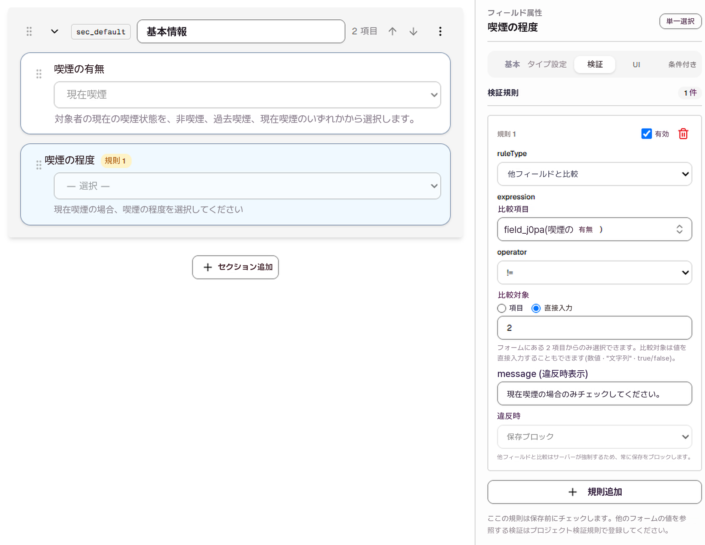
ruleType = 他フィールドと比較 — 選択すると、下の欄が比較用に変わります。
比較項目 — 同じフォームの他のフィールドを選びます。キャプチャでは field_j0pa(喫煙の有無) です。
operator — 比較方法です。キャプチャでは !=(等しくない) です。
比較対象 — 項目と直接入力から選びます。キャプチャでは直接入力で 2 を入れました — 「喫煙の有無」の保存値(value)です。3.2
画面の案内 — 「フォームにある 2 項目からのみ選択できます。比較対象は値を直接入力することもできます(数値 · "文字列" · true/false)。」
message (違反時表示) — キャプチャでは 現在喫煙の場合のみチェックしてください。 です。
違反時 — グレーで無効です。画面の案内のとおり「他フィールドと比較はサーバーが強制するため、常に保存をブロックします。」 — この規則では警告を選べず、保存ブロックに固定されます。
注意事項
必須確認 データ破損 · フォーム完了不可
- • ⛔ 条件の向きを発行前に必ず確認してください。検証規則は満たすべき条件として書くのが原則ですが、キャプチャの設定(
喫煙の有無 != 2)と message(「現在喫煙の場合のみ」)は互いに逆の意味に読めます。不等号1つで意味が逆転するため、設定した後にプレビューで実際の動作を確認してください。 - • ⛔ 比較対象には label ではなく value を入れます。「現在喫煙」と書くと比較が成り立ちません — 選択肢一覧で保存値を先に確認してください。3.2
誤解しやすい動作
- • この規則は警告にできません。違反時が保存ブロックに固定されるため、必ず防ぐべき関係にだけ使用してください。参考として知らせるだけでよい場合は、条件付き表示6章でそもそも質問しない方が適しています。
- • 同じ関係であれば、条件付き表示が先です — そもそも尋ねなければ、誤って入力することもありません。6章
UIタブ — 画面配置と案内文
- 5.1UIタブの全体構成
- 5.2レイアウト幅
- 5.3読み取り専用 · 非表示
- 5.4placeholder · helpText
5.1全体構成
概要
値そのものではなく、画面にどう配置し、どう案内するかを決めるタブです。このタブの設定は、保存されるデータそのものを変更しません。ただし、非表示は画面上で隠すだけで必須集計からは除外されないため、使用する前に 5.3 を確認してください。
画面説明
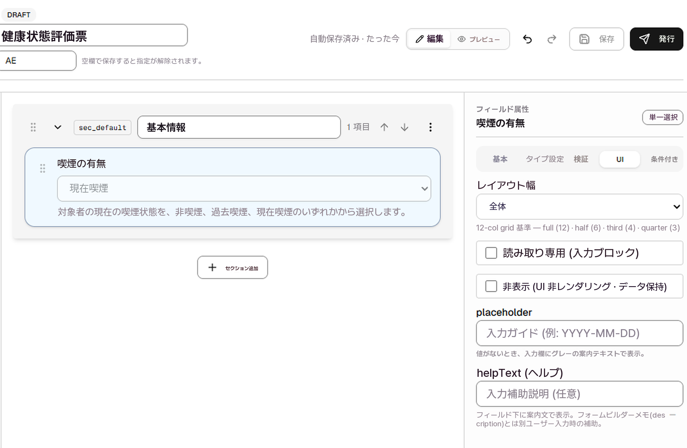
レイアウト幅 — 一行の中でこのフィールドが占める幅です。選択肢の意味は、すぐ下の案内「12-col grid 基準 — full (12) · half (6) · third (4) · quarter (3)」に記載されています。5.2
読み取り専用 (入力ブロック) — 表示はしますが、変更できないようにします。5.3
非表示 (UI 非レンダリング · データ保持) — 画面から隠します。5.3
placeholder — 値がないときに表示される案内です。このタイプでは— 選択 — の位置を置き換えます。5.4
helpText (ヘルプ) — フィールドの下に表示される案内文です。5.4
注意事項
必須確認 データ破損 · フォーム完了不可
- • 表示方式によって幅の影響が異なります。ドロップダウンは狭くしても1行なので問題ありませんが、ラジオは選択肢が改行されて配置が乱れます。3.3 · 3.4 · 5.2
誤解しやすい動作
- • 入力欄に薄く表示される
入力ガイド (例: YYYY-MM-DD)·入力補助説明 (任意)は入力例であり、設定された値ではありません。
参考
- • デフォルト値はレイアウト幅 = 全体、読み取り専用 · 非表示は解除状態です。
- • 選択肢の色やサイズを設定する項目はありません。表示方式3.3と出力方向3.4でのみ調整します。
5.2レイアウト幅
概要
1行を12マスに分けた12-column grid上で、このフィールドが占める幅を選択します。表示方式がドロップダウンであれば、幅を狭くしても1行なので比較的安全です。
画面説明
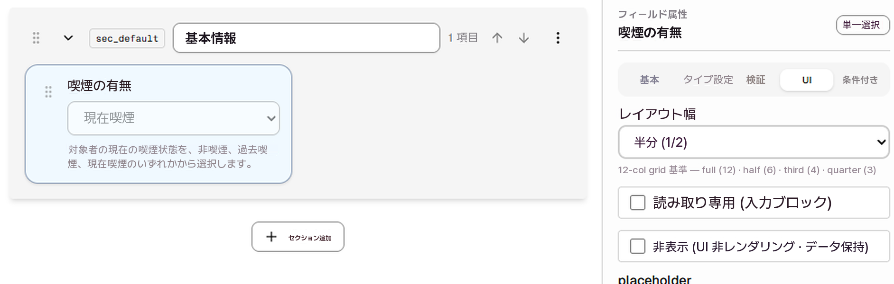
レイアウト幅 — 選択リストから幅を指定します。例は半分 (1/2)です。
ドロップダウンが半分の幅に縮みます。ヘルプの文言も狭くなった幅に合わせて2行に折り返されます。
注意事項
必須確認 データ破損 · フォーム完了不可
- • ⛔ ラジオで表示するフィールドは幅を狭くしないでください。選択肢が横に並ぶのに幅が足りないと、改行位置が不ぞろいになって読みにくくなります。どうしても狭くする必要がある場合は、出力方向を 1(縦) に合わせて変更してください。3.4
誤解しやすい動作
- • はい/いいえのような短い選択肢は半分の幅によく合います。関連する2つの質問を横に並べるとフォームが短くなります。
- • 幅を狭めると、次のフィールドが同じ行に配置されます。一行の合計が12を超えると、次の行に移ります。
参考
- • 画面幅が狭い端末では、設定に関係なく一行に一つずつ縦に配置されることがあります。
幅の選択肢
| 選択 | 占める列数 | ドロップダウンの場合 | ラジオの場合 |
|---|---|---|---|
| 全体 | 12 | 余裕あり | 選択肢が横に並ぶ |
| 半分 (1/2) | 6 | 無難 — 対になる項目を横に並べる | 選択肢が改行されることがある |
| 三分の一 (1/3) | 4 | 文言が長いと切れることがある | 推奨しない |
| 四分の一 (1/4) | 3 | 短い選択肢のみ | 推奨しない |
5.3読み取り専用 · 非表示
概要
フィールドを変更できないようにしたり、表示されないようにしたりします。どちらも保存された値はそのまま保持されます。
画面説明
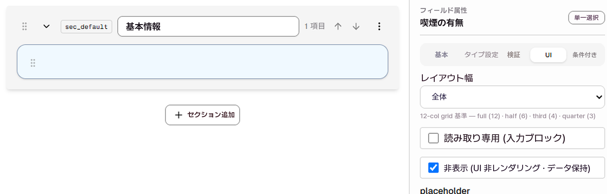
読み取り専用 (入力ブロック) — 選んだ値は表示されますが、ユーザーは変更できません。(このキャプチャでは解除状態)
非表示 (UI 非レンダリング · データ保持) — 入力画面に表示しません。すでに保存された値は削除されません。
キャンバスからフィールドが消え、セクションが空に見えます。
注意事項
必須確認 データ破損 · フォーム完了不可
- • ⛔ 必須項目を非表示にしないでください。UIタブの非表示は画面上で隠すだけで、必須集計からは除外されません — ユーザーが選べない項目が分母に残り、フォームを完了できなくなります。
- • 非表示はデータを削除しません。画面上で消えるだけなので、値を削除するにはフィールドを削除する必要があります。
誤解しやすい動作
- • 条件付きタブの非表示とは異なります。条件が合わずに非表示になったフィールドは、必須集計から除外されます6章。同じ「非表示」という表現を使いますが、検証での扱いが正反対なので、区別してください。
- • 読み取り専用と非表示は異なります。読み取り専用は「表示するが変更できない」、非表示は「表示しない」です。すでに選んだ回答を確認させる必要がある場合は、読み取り専用を使用してください。
参考
- • 非表示にしても構造パネルにはそのまま残っています — 再度選択して設定を元に戻せます。
5.4placeholder · helpText
概要
ユーザーに何を選べばよいかを伝える2つの文言です。このタイプの placeholder は他のタイプと役割が異なります — 入力欄内の薄い文字ではなく、まだ選んでいない状態の文言を置き換えます。
画面説明
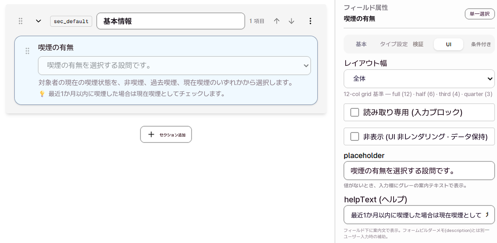
— 選択 — の位置を置き換え、helpText はフィールドの下に付くplaceholder — 未選択状態に表示する文言を入力します。キャプチャでは 喫煙の有無を選択する設問です。 です。
ドロップダウンの— 選択 — の位置を置き換えます。値を選ぶとその文言は消え、選択した label が表示されます。
helpText (ヘルプ) — フィールドの下に表示する案内文を入力します。キャプチャでは 最近1か月以内に喫煙した場合は現在喫煙としてチェックします。 です。
フィールドの下に電球アイコン(💡)とともに表示されます。値を選んでも消えません。
注意事項
必須確認 データ破損 · フォーム完了不可
- • 選択の基準は helpText に書いてください。キャプチャの「最近1か月以内に喫煙していれば現在喫煙としてチェック」のように境界を分ける基準を書いておくと、記録者間のばらつきが減ります — 選択肢のラベルだけでは「現在」と「過去」の境界がわかりません。
- • ラジオで表示すると placeholder は表示されません。選択肢がすべて表示され、未選択状態の文言を置く場所がないためです — ラジオを使うときは、案内を helpText にだけ書いてください。3.3
誤解しやすい動作
- • description と helpText は別々の項目です。画面の案内のとおり — helpText は「フォームビルダーメモ(description)とは別 — ユーザー入力時の補助」です。両方を入力すると、二行が一緒に表示されます。
3つの文言の役割
| 項目 | 表示位置 | 単一選択では | 設定場所 |
|---|---|---|---|
| placeholder | 未選択状態の文言 | — 選択 — を置き換え | UIタブ |
| helpText | フィールドの下 (💡) | 選択の基準を書く | UIタブ |
| description | 表示名の下 | どのカテゴリに分かれるか | 基本タブ 2.1 |
条件付きタブ — 他の値に応じて表示する
- 6.1条件付き表示の有効化
- 6.2条件の設定
6.1条件付き表示の有効化
概要
他のフィールドの値に応じてこのフィールドを表示したり隠したりする機能です。「喫煙の有無 = 現在喫煙」のときだけ喫煙の程度を質問する、といった分岐に使用します — 単一選択どうしをつなぐのに適した機能です。
画面説明
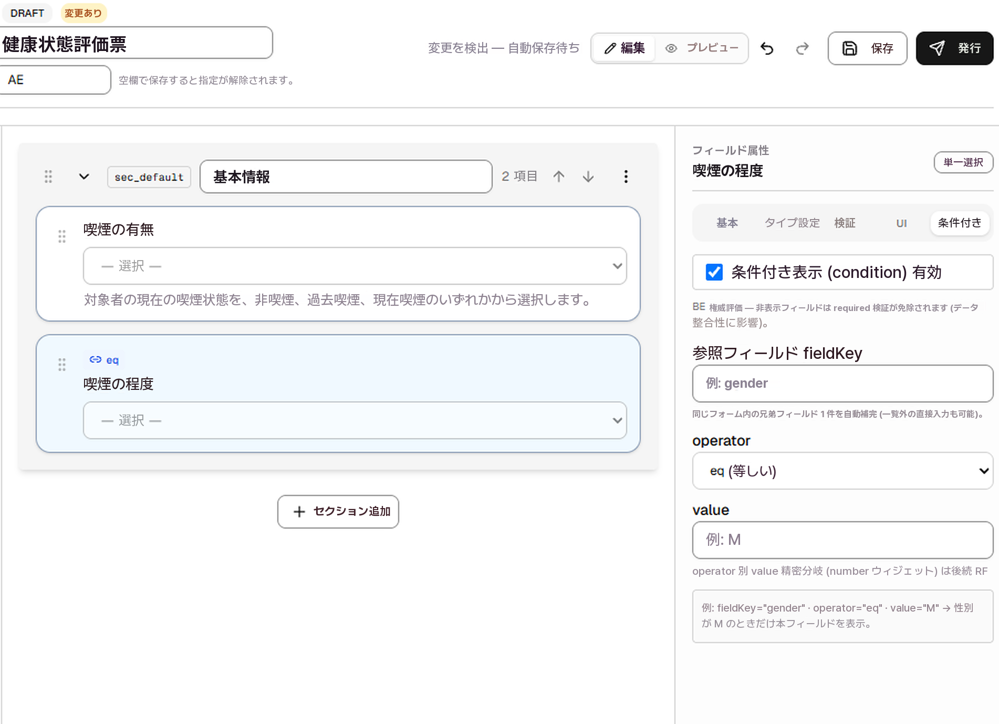
条件付き表示 (condition) 有効 — 選択すると、下の条件設定が表示されます。
⚠ 画面の案内 — 「非表示フィールドは required 検証が免除されます (データ整合性に影響)。」 条件の判定はシステムが実行します。
キャンバスのフィールドの上に 🔗 eq バッジが表示され、条件が適用されたことを知らせます。
参照フィールド fieldKey — 条件の基準となる、同じフォーム内の他のフィールドです。同じフォームの兄弟フィールドが自動補完され、一覧にない値を直接入力することもできます。
operator — 比較方法です。デフォルト値はeq (等しい)です。
value — 比較する値です。
下部の例 — fieldKey="gender" · operator="eq" · value="M" → 性別が M のときだけ本フィールドを表示。
注意事項
必須確認 データ破損 · フォーム完了不可
- • 条件を設定すると、必須検証が免除される場合があります。条件が合わずに非表示になっている間は、そのフィールドが必須であっても空の状態でフォームが完了します。これは不具合ではなく意図された動作です。
- • すでに選んだ値がある状態で条件が偽になると、その値は画面から消えます。分岐の基準となるフィールドを後で変更するときは注意してください。
誤解しやすい動作
- • 検証規則4.3より条件付き表示を先に検討してください。該当しない人にそもそも質問しなければ、誤って選ぶことも、保存がブロックされることもありません。検証は、それでも防ぐ必要があるときに使う最後の手段です。
参考
- • 条件を有効にして参照フィールドを空欄にすると、条件は成立しません。必ず②~④をすべて入力してください。6.2
6.2条件の設定
概要
6.1 で有効にした条件を最後まで入力した状態です。この設定では「喫煙の有無」フィールドの値が 2 のときだけこのフィールドが入力画面に表示されます。単一選択を参照するときに value と label の区別が最もはっきり表れる箇所です。
画面説明
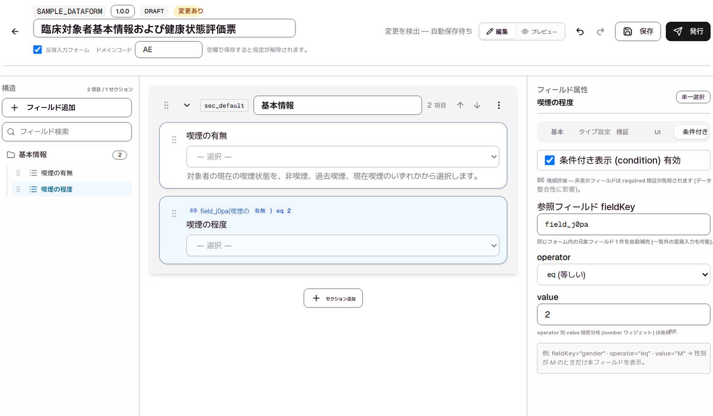
喫煙の有無 が 2(現在喫煙) のときだけ表示されるように設定した状態参照フィールド fieldKey = field_j0pa — 同じフォームの「喫煙の有無」フィールドを指します。
operator = eq (等しい)
value = 2 — 画面に表示される「現在喫煙」ではなく、その選択肢の保存値(value)を入力します。3.2
①~③をすべて入力した結果 — キャンバスのバッジが 🔗 field_j0pa(喫煙の有無) eq 2 に具体化されます。
参照先の「喫煙の有無」フィールドが同じフォーム内にある必要があり、構造ツリーで確認できます。
下部の例 — fieldKey="gender" · operator="eq" · value="M" → 性別が M のときだけ本フィールドを表示。
注意事項
必須確認 データ破損 · フォーム完了不可
- • ⛔ value には label ではなく保存値を入力します。「現在喫煙」と書くと条件が永遠に成立せず、このフィールドは最後まで表示されません。参照するフィールドの選択肢一覧で保存値を先に確認してください。3.2
- • ⛔ 参照フィールドの value を変えると、条件が気づかないうちに壊れます。たとえば「現在喫煙」の value を
2からCURRENTに変えると、この条件はエラーなしにただ成立しなくなります — そのため発行後の value 変更は危険です。3.2 - • 参照フィールドの fieldKey を変更または削除しても条件が壊れます。条件は表示名ではなく fieldKey で結び付けられます。2.1
参考
- • 条件を使用するとフォームが短くなり、不要な入力が減ります。ただし、条件が互いに衝突すると最後まで表示されないフィールドが生じるため、設定後にプレビューで必ず確認してください。
付録
- 7.1設定項目一覧
7.1単一選択フィールドの設定項目一覧
タブ別の設定項目
| タブ | 項目 | 何を決めるか | 本文 |
|---|---|---|---|
| 基本 | fieldKey | 値が保存される実際のキー (保存後の変更禁止) | 2.1 |
| label (表示名) | 画面に表示される項目名 | 2.1 | |
| description (ヘルプ) | 表示名の下の補足説明 — どのカテゴリに分かれるか | 2.1 | |
| 必須入力 | 必ず選択する必要があるか (先に選択肢がすべてのケースを網羅しているか) | 2.2 | |
| SDV検証対象 | CRA原資料照合の対象か · 検証必須かどうか | 2.3 | |
| AE意味ロール | このタイプが指定対象 — 「SAE の有無」など | 1.1 · ※ | |
| 未測定宣言を許可 | 「不明」を値として残せるか · 表示ラベル · 表示灯 | 2.4 | |
| タイプ設定 | options — value | 保存される値 (発行後は変更禁止) | 3.2 |
| options — label | 画面に表示される文言 (いつでも変更可能) | 3.2 | |
| options — 有効 · 順序 · 削除 | 選択肢を提供するかどうか · 表示順序 · 行の削除 | 3.2 | |
| 表示方式 (displayStyle) | ドロップダウン / ラジオ | 3.3 | |
| 選択肢出力方向 | 1行あたりの個数 — ラジオのときだけ表示 | 3.4 | |
| デフォルト値 (defaultValue) | あらかじめ選んでおく選択肢 (value で指定 · プレビューで確認) | 3.5 | |
| 検証 | ruleType | 規則の種類 — このタイプでは他フィールドと比較を使用 | 4.2 · 4.3 |
| 比較項目 · operator · 比較対象 | 同じフォームの他のフィールドと比べる条件 (value で比較) | 4.3 | |
| message | 違反時にユーザーに表示する文言 | 4.3 | |
| 違反時 · 有効 | 他フィールドと比較は保存ブロックに固定 · 規則の有効 · 無効 | 4.3 | |
| UI | レイアウト幅 | 12-col grid 上の幅 (ラジオなら狭くしない) | 5.2 |
| 読み取り専用 | 表示はするが変更できないように | 5.3 | |
| 非表示 | 画面に表示しない (保存値は保持 · 必須集計には残る) | 5.3 | |
| placeholder · helpText | placeholder は — 選択 — を置き換え · 選択の基準は helpText | 5.4 | |
| 条件付き | 条件の有効化 | 条件付き表示を使用するかどうか (必須検証の免除) | 6.1 |
| 参照フィールド fieldKey | 条件の基準となる、同じフォームのフィールド | 6.2 | |
| operator · value | 比較方法と比較する値 (保存値を入力) | 6.2 |
必ず覚えておくこと
必須確認 データ破損 · フォーム完了不可
- • value と label を区別してください。データに保存されるのは value で、条件付き表示 · 検証 · デフォルト値もすべて value で指定します。3.2 · 3.5 · 4.3 · 6.2
- • 発行した後に value を変更しないでください。既存データの意味が失われ、その値を参照していた条件も気づかないうちに壊れます。3.2 · 6.2
- • 空の選択肢2行をそのままにしないでください。薄い
M·男性は例であり、選択肢のないフィールドになります。3.1 - • 「他フィールドと比較」は、条件の向きを発行前に確認してください — 違反時は保存ブロック固定です。4.3
- • ラジオのフィールドは幅を狭くしないでください — 狭くする必要がある場合は出力方向を 1(縦)に。3.4 · 5.2
誤解しやすい動作
- • デフォルト値は編集画面に表示されません。[プレビュー] でのみ確認できます。3.5
- • placeholder は
— 選択 —を置き換え、ラジオでは表示されません。5.4
参考
- • 同じ関係であれば検証規則より条件付き表示が優先です — 質問しなければ間違えることもありません。4.3 · 6.1
この文書で扱っていないもの
※ AE意味ロール — このタイプが指定対象ですが、設定手順のキャプチャがないため、別の節を設けていません。詳しい使い方は、AE 関連の文書を参照してください。1.1
共通コード(CodeGroup)連携 — 選択肢をプロジェクト共通コードで管理する方法はシステムにはありますが、この画面には項目がありません。フォームごとに直接列挙する必要があるため、value と label を同じに揃えているかを確認してください。3.2
自動計算 (calculation) — 項目は表示されますが、このタイプでは使用しません。数値タイプで使用してください。3.1
「値の範囲」検証規則 — 規則の種類として選ぶことはできますが、選択肢からのみ選ぶタイプのため使う場面がありません。4.2